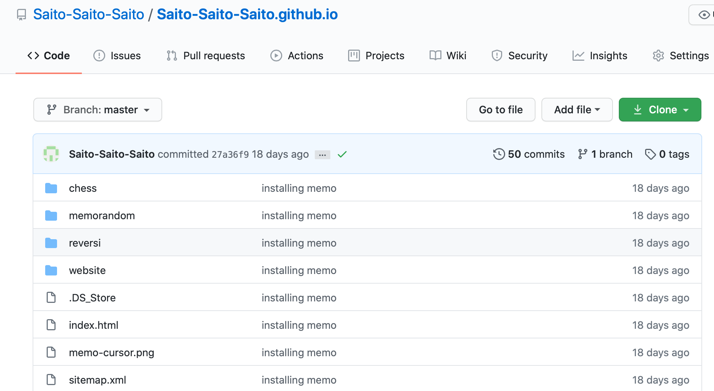
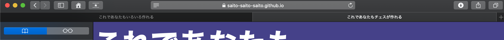

みなさま、ようこそ。ウェブサイトのプログラミングです。全 5 ステージでウェブサイトをコーディングします。これであなたも サイトが作れる。
目次
Stage 0 必要な知識を身につける
巷には「最速でウェブサイトを作る方法」とか言ってとても感覚的にウェブサイトを作ることができる機能があったりします。検索すれば Wix とか WordPress といったサービスが簡単に引っかかります。
でもそうしたツールに頼っても満足できない方。いますよね。その気持ち、わかりますよ。そして自前でこんなサイトを作ってみたい。そう思った皆さん方に向けて、このサイトでは「サイトをデザインするときはこうしていますよ」という様子をご覧に入れたいと思います。
とはいえ「私なにも知りません」という方には、この解説少し荷が重すぎます。ここでは
- HTMLファイルの書き方の基本
- CSSファイルの書き方の基本
- GitHub の使い方の基本(Stage 5〜)
を前提にしています。これに関する解説はネットや参考書などに溢れんばかりにありますので、ここだけはご自分で勉強なさってください。逆にこれさえわかれば大したことはありません。目安として、
背景を全面青くして、フォントサイズ 3 px で "Hello world!" と書く
ということができればとりあえず問題ありません。
さて、わずかにでもウェブプログラミングを勉強した方なら、上に jQery なんかが含まれていなくて「？」と思ったかもしれませんが、jQuery などの Javascript は使わなくても十分いいサイトができます。ほら、現にこのサイトがそうでしょ。あ、今傲慢なこと言った。
Javascript はサイトを重くする決定的な要因の一つです。なんなら css も少ないに越したことはないんです。我々学習者は新しい知識を得るとすぐに使いたくなってしまうものですが、本当の意味でスキルのある人は総じて「いらないことはしない」という能力に長けているものです。
ということで、このサイトでは
入門の勉強は終わったけど何すればいいかわからない
という方々に素材を提供するものです。もちろん「HTML ファイルは簡単に作れるから Stage 3 から先をみてみよう」なんて使い方もできます。
Stage 1 書く内容を考える
はじめに大まかでいいので、サイトに書く内容を頭の中に思い描いておきます。大まかというのはそれこそ「ここは何を書くかをテーマにしてサイトを書こう」くらいで結構です。なお、今回我々がコーディングするのは当ウェブサイトの Stage 0&1 と Stage 2 の部分のみです。私の解説ではこの 2 ページを書き上げて完成とします。
したがって、ソースコードも GitHub にあげているもののうちほんのわずかしか使いませんのでご了承ください。
GitHub のリンクに飛びますと、おおよそこんな画面になっていると思います。
こちらの website というフォルダを開きますと、こんな感じに
我々が書き上げるのは、この階層で
- stage2
- index.html
- stylesheet.css
- stylesheet.scss
- updir.png
- dndir.png
のみです。他はまったく使いません。書く文章の内容も上の目次で挙げたとおり、
- Stage 0 必要な知識を身につける
- Stage 1 書く内容を考える
- Stage 2 文章のレイアウトを考える
に加えて、目次やヘッダー・フッターくらいです。そう難しいことはありません。
次回予告
ここまででウェブサイトの大雑把な内容を決めました。次回は HTML ファイルにコーディングします。今回はほとんど解説しませんでしたが、次回以降は詐欺にならないようにしておりますので、どうぞご安心を。